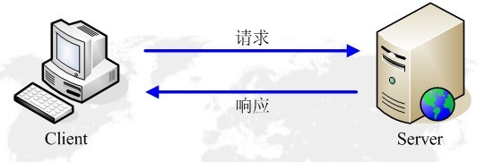
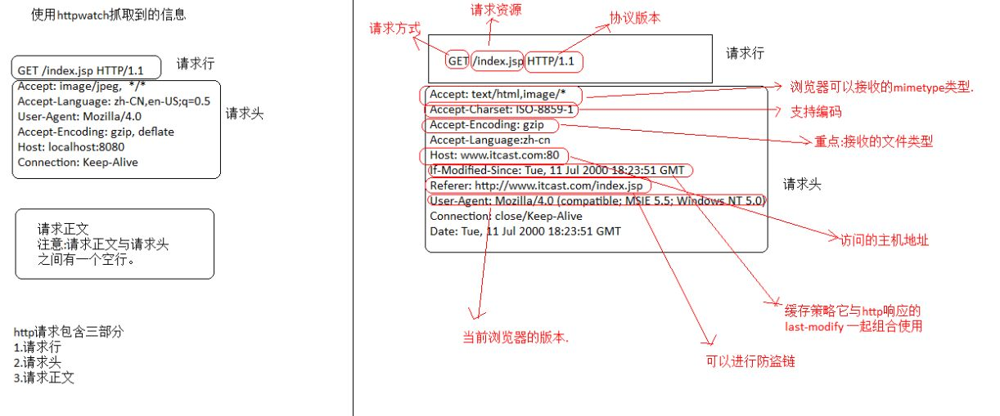

HTTP是一个客户端和服务器端请求和应答的标准（TCP）。客户端是终端用户，服务器端是网站。通过使用Web浏览器、网络爬虫或者其它的工具，客户端发起一个到服务器上指定端口（默认端口为80）的HTTP请求。

客户端向服务器发送一个请求，请求头包含请求的方法、URL、协议版本、以及包含请求修饰符、客户信息和内容的类似于MIME的消息结构。
服务器以一个状态行作为响应，响应的内容包括消息协议的版本，成功或者错误编码加上包含服务器信息、实体元信息以及可能的实体内容。
通常HTTP消息包括客户机向服务器的请求消息和服务器向客户机的响应消息。这两种类型的消息由一个起始行，一个或者多个头域，一个指示头域结束的空行和可选的消息体组成。

HTTP的头域包括通用头，请求头，响应头和实体头四个部分。每个头域由一个域名，冒号（:）和域值三部分组成。域名是大小写无关的，域值前可以添加任何数量的空格符，头域可以被扩展为多行，在每行开始处，使用至少一个空格或制表符。
HTTP常见状态码 所有的状态码:百度百科
HttpUrlConnection
Get 方式请求网络基本流程
Post 方式请求网络基本流程
使用原生API发送Get请求
public class Get {
public static final String USER_AGENT = "Mozilla/5.0";
public static void main(String[] args) throws IOException {
//1、准备要访问的URL
String url = "http://www.itcast.cn";
URL obj = new URL(url);
HttpURLConnection con = (HttpURLConnection) obj.openConnection();
//2、设置Http协议的参数
// optional default is GET
con.setRequestMethod("GET");
//add request header
con.setRequestProperty("User-Agent", USER_AGENT);
//3、发起HTTP请求，获取状态码
int responseCode = con.getResponseCode();
System.out.println("\nSending 'GET' request to URL : " + url);
System.out.println("Response Code : " + responseCode);
//4、如果是正常相应，读取数据
if (responseCode == 200) {
BufferedReader in = new BufferedReader(
new InputStreamReader(con.getInputStream()));
String inputLine;
StringBuffer response = new StringBuffer();
while ((inputLine = in.readLine()) != null) {
response.append(inputLine);
}
in.close();
//print result
System.out.println(response.toString());
}
}
}
使用原生API发送Post请求
package cn.itcast.pcss.base.httpurlconnection;
import java.io.BufferedReader;
import java.io.DataOutputStream;
import java.io.IOException;
import java.io.InputStreamReader;
import java.net.HttpURLConnection;
import java.net.URL;
public class Post {
public static final String USER_AGENT = "Mozilla/5.0";
public static void main(String[] args) throws IOException {
String url = "http://sspc.itcast.cn/login/login.html";
URL obj = new URL(url);
HttpURLConnection con = (HttpURLConnection) obj.openConnection();
//add reuqest header
con.setRequestMethod("POST");
con.setRequestProperty("User-Agent", Post.USER_AGENT);
con.setRequestProperty("Accept-Language", "en-US,en;q=0.5");
String urlParameters = "username=maoxiangyi&password=&maoxiangyi&reURL=http://shop.itcast.cn/item/itemList.html";
// Send post request
con.setDoOutput(true);
DataOutputStream wr = new DataOutputStream(con.getOutputStream());
wr.writeBytes(urlParameters);
wr.flush();
wr.close();
int responseCode = con.getResponseCode();
System.out.println("\nSending 'POST' request to URL : " + url);
System.out.println("Post parameters : " + urlParameters);
System.out.println("Response Code : " + responseCode);
if (responseCode == 200) {
BufferedReader in = new BufferedReader(new InputStreamReader(con.getInputStream()));
String inputLine;
StringBuffer response = new StringBuffer();
while ((inputLine = in.readLine()) != null) {
response.append(inputLine);
}
in.close();
System.out.println(response.toString());
}
}
}
本节介绍使用HttpClient进行网络请求。
HttpClient 是 Apache Jakarta Common 下的子项目，可以用来提供高效的、最新的、功能丰富的支持 HTTP 协议的客户端编程工具包，并且它支持 HTTP 协议最新的版本和建议。
为什么有HttpClient
使用HttpClient的maven依赖
<dependency>
<groupId>org.apache.httpcomponents</groupId>
<artifactId>httpclient</artifactId>
<version>4.5.3</version>
</dependency>
<dependency>
<groupId>org.apache.httpcomponents</groupId>
<artifactId>fluent-hc</artifactId>
<version>4.5.2</version>
</dependency
使用HttpClient进行Get请求
代码实现
import org.apache.http.HttpEntity;
import org.apache.http.client.methods.CloseableHttpResponse;
import org.apache.http.client.methods.HttpGet;
import org.apache.http.impl.client.CloseableHttpClient;
import org.apache.http.impl.client.HttpClients;
import org.apache.http.util.EntityUtils;
import java.nio.charset.Charset;
/**
* Created by maoxiangyi on 2017/6/26.
*/
public class SimpleGet {
public static void main(String[] args) throws Exception {
CloseableHttpClient httpclient = HttpClients.createDefault();
HttpGet httpGet = new HttpGet("http://sspc.itcast.cn");
CloseableHttpResponse response = httpclient.execute(httpGet);
System.out.println(response.getStatusLine());
if (response.getStatusLine().getStatusCode() == 200) {
HttpEntity entity = response.getEntity();
String html = EntityUtils.toString(entity, Charset.forName("utf-8"));
System.out.println(html);
}
response.close();
}
}
使用HttpClient进行Post请求
代码实现：
import org.apache.http.Header;
import org.apache.http.HttpEntity;
import org.apache.http.NameValuePair;
import org.apache.http.client.entity.UrlEncodedFormEntity;
import org.apache.http.client.methods.CloseableHttpResponse;
import org.apache.http.client.methods.HttpGet;
import org.apache.http.client.methods.HttpPost;
import org.apache.http.impl.client.CloseableHttpClient;
import org.apache.http.impl.client.HttpClients;
import org.apache.http.message.BasicNameValuePair;
import org.apache.http.util.EntityUtils;
import java.nio.charset.Charset;
import java.util.ArrayList;
import java.util.List;
/**
* Created by maoxiangyi on 2017/6/26.
*/
public class SimplePost {
public static void main(String[] args) throws Exception {
CloseableHttpClient httpclient = HttpClients.createDefault();
HttpPost httpPost = new HttpPost("http://shop.itcast.cn/login/login.html");
List<NameValuePair> nvps = new ArrayList<NameValuePair>();
nvps.add(new BasicNameValuePair("username", "maoxiangyi"));
nvps.add(new BasicNameValuePair("password", "maoxiangyi"));
nvps.add(new BasicNameValuePair("reURL", "http://shop.itcast.cn/item/itemList.html"));
httpPost.setEntity(new UrlEncodedFormEntity(nvps));
CloseableHttpResponse response = httpclient.execute(httpPost);
System.out.println(response.getStatusLine());
//如果登录之后需要重定向，获取重定向的值
Header[] headers = response.getAllHeaders();
for (Header header : headers) {
System.out.println(header);
}
if (response.getStatusLine().getStatusCode() == 302) {
Header[] locations = response.getHeaders("Location");
String url = locations[0].getValue();
System.out.println(url);
HttpGet httpGet = new HttpGet(url);
CloseableHttpResponse response1 = httpclient.execute(httpGet);
if (response1.getStatusLine().getStatusCode() == 200) {
HttpEntity entity = response1.getEntity();
String html = EntityUtils.toString(entity, Charset.forName("utf-8"));
System.out.println(html);
}
response1.close();
}
response.close();
}
}
使用HttpClient进行Get请求-简单方式
import org.apache.http.HttpEntity;
import org.apache.http.HttpHost;
import org.apache.http.HttpVersion;
import org.apache.http.client.fluent.Form;
import org.apache.http.client.fluent.Request;
import org.apache.http.entity.ContentType;
import java.io.IOException;
import java.nio.charset.Charset;
/**
* Created by maoxiangyi on 2017/6/26.
*/
public class EasyGet {
public static void main(String[] args) throws IOException {
String html = Request.Get("http://shop.itcast.cn").execute().returnContent().asString(Charset.forName("UTF-8"));
System.out.println(html);
}
}
使用HttpClient进行Post请求-简单方式
import org.apache.http.Header;
import org.apache.http.HttpEntity;
import org.apache.http.HttpResponse;
import org.apache.http.client.fluent.Form;
import org.apache.http.client.fluent.Request;
import org.apache.http.client.methods.CloseableHttpResponse;
import org.apache.http.client.methods.HttpGet;
import org.apache.http.util.EntityUtils;
import java.io.IOException;
import java.nio.charset.Charset;
/**
* Created by maoxiangyi on 2017/6/26.
*/
public class EasyPost {
public static void main(String[] args) throws IOException {
HttpResponse response = Request.Post("http://shop.itcast.cn/login/login.html")
.bodyForm(Form.form().add("username", "maoxiangyi").add("password", "maoxiangyi").add("reURL","http://shop.itcast.cn/item/itemList.html").build())
.execute().returnResponse();
if (response.getStatusLine().getStatusCode() == 302) {
Header[] locations = response.getHeaders("Location");
String url = locations[0].getValue();
System.out.println(url);
HttpGet httpGet = new HttpGet(url);
String html = Request.Get(url).execute().returnContent().asString(Charset.forName("UTF-8"));
System.out.println(html);
}
}
}